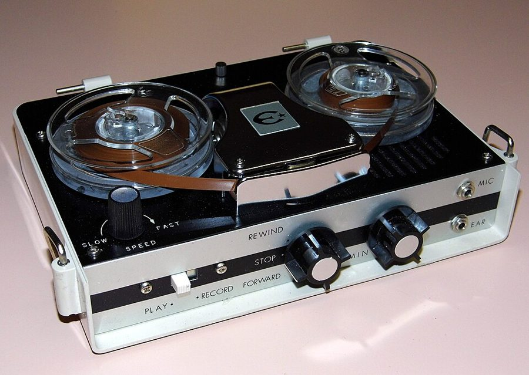
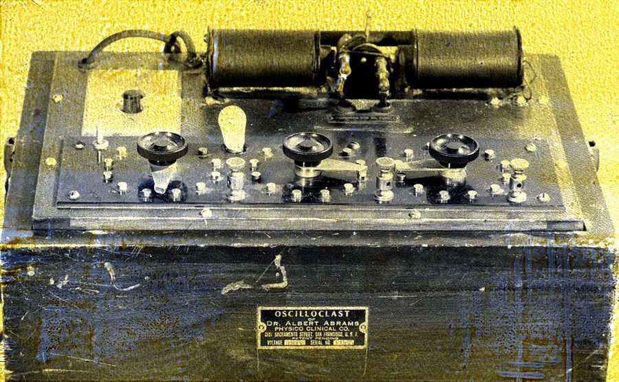

读之前
这一页是报告 13 的前半，只有 6 月 10 日一天：查理在飞往芝加哥的飞机上，去参加报告 12 里说的那场心理学大会。这一篇开头他就交代了，报告从这里起不再是他亲手写、亲手打的，留意这对文字有什么影响。读的时候抓两条线：一条是飞机上的此刻，一条是被此刻勾起来的往事。留意两条线之间是什么连着。
32 岁，手术后三个月，智商约 185，远远超过身边的人。面包店的工作丢了，Welberg 基金会给他发薪水；学会了打字。讨厌 Nemur 把他当实验标本；和 Alice 吵了一架，她不去芝加哥。童年的事越想越多：母亲 Rose、父亲 Matt、妹妹 Norma。几天前夜里在中央公园惊慌失措，被人当成坏人追。
读的时候带着这几个问题。不用先找答案，读完回来对照「检查一下理解」。
起飞前，查理为什么不肯系安全带？留意他自己怎么去找原因。§2–§3
往事里的几个大人，各自想要的是什么？有谁真正看见了那个孩子？§3
查理怎么解释自己当初想变聪明的那股劲？和报告 12 里他说的 Lester 对照着想。§5
分节地图
这一页只有 6 月 10 日一天，原书用 *** 隔成五段，一段算一条。读完一条打个勾；每条下面的英文是那一条开头的几个词，在 Kindle 里搜它就能跳过去。没读的那几行先模糊着，免得提前看到情节，点一下就能看清。全页约 3400 词，一次读完。
6 月 10 日约 400 词 We’re on a Strato-jet about to … 这一篇的第一段口述。留意他说到飞机、自己的声音和上帝。 6 月 10 日（续）约 100 词 “We’re ready to take off, sir. … 只有对话，没有一句叙述。想想这一段是怎么到纸上的。 6 月 10 日（续）约 2500 词 Ridiculous. There’s nothing to be afraid … 全页最长的一条。留意从飞机滑进往事的那几行，人称和时态怎么变。 6 月 10 日（续）约 100 词 “Sorry to interrupt you, sir, but … 又只有对话。和 §2 对照着读。 6 月 10 日（续）约 300 词 Now I can see where I … 回到此刻的口述。留意他怎么说往事里的人，又怎么说 Nemur。
背景：书里默认你知道的事
按在书里出现的顺序排，标题前是节号。人名后面括号里是中译本的译名，读者想对照译本时用。
§1 口述、录音机和速记员这一篇第一段查理就交代了：报告不再自己写、自己打，而是对着一台晶体管录音机说，到了芝加哥再请速记员打成字。晶体管让录音机变小、能用电池，1960 年代有不少手提的盘式录音机。public stenographer 是一种行当：多半自己开业，在旅馆、写字楼里设个桌子，替出差、来开会的人记录口述、打信件和稿子，按小时或按页收钱。

一台约 1960 年代日本产的手提晶体管盘式录音机（Electra TP-500）。与本书无关，只是让你看看这类机器的样子。Joe Haupt，CC BY-SA 2.0，维基共享资源
查理在飞机上说 学着把想的说出来
晶体管录音机 一卷一卷的磁带
芝加哥的速记员打字 嗯、呃、啊大概会删掉
打成字的进步报告 就是你在书里读到的
另一条路：最新的一卷在大会那一场的最后播放（Nemur 的主意）
本站示意图：§1 里查理交代的这一篇报告的来路。 §1 这一页提到的人§1 里查理说起「关于上帝的那些讨论」：报告 7 里护士 Hilda 说他该求上帝原谅他们对他做的事，报告 10 里他在 Campus Bowl 第一次听人说也许没有上帝。下面几张卡片只写你此刻知道的。
Burt Selden 伯特 做测验的研究生，手术前就给查理做墨迹测验。
Nemur 尼姆 主持实验的教授。报告 12 里查理说，讨厌他总把自己当实验标本。
Rose Gordon 罗丝 查理的母亲。报告 10 里他想起了她的名字：瘦，说话快，坚持说查理是正常的孩子；报告 11 的回忆里，她拿皮带要打他。
Matt Gordon 马特 查理的父亲。报告 10 里他劝 Rose 别再假装孩子正常；报告 12 养狗那一段，他替查理说话。
Norma 诺尔玛 妹妹，比查理小好几岁（报告 10 里查理六岁时她还没出生）。报告 12 里她考了 A，要养狗。
Hymie Roth 海米 报告 9 的回忆里，替十一岁的查理在情人节礼物的包装纸上写字、一边写一边笑的同学。
§3 二十世纪前半叶的「增智」疗法智力障碍的成因很多，二十世纪前半叶的医学对大多数拿不出办法，各种疗法就都有人试、有人卖。有的对少数病因真有用：先天缺甲状腺素的孩子（当时叫克汀病），1890 年代起用甲状腺提取物治疗，效果明显，尤其是身体发育。有的是骗局：旧金山医生 Albert Abrams 1920 年代卖一种电子箱，号称能诊治几乎所有的病，1924 年《科学美国人》（Scientific American）调查后说它毫无疗效。还有的起初看着有希望：1946 年有研究说谷氨酸能提高智障孩子的智力，后来带对照组的试验大多做不出效果。

Abrams 的「振荡破坏器」（Oscilloclast）。他声称疾病是体内「电子振荡的失调」。铭牌上印着他的名字和旧金山。与本书无关。美国食品药品监督管理局（FDA），公有领域，维基共享资源 §3 巴斯德巴斯德（Louis Pasteur，1822–1895），法国化学家、微生物学家：证明了发酵和许多疾病是微生物引起的，发明了加热杀菌的巴氏消毒法，1885 年第一次用狂犬病疫苗救人。他的学说在当时受过不少同行的质疑。§3 里有人拿他作比方：主流医生反对一种疗法，正说明他们怕被证明是错的。同一句里的 Jennings 是谁，书里没交代。
§5 当时的几个叫法feeble-minded（低能）是二十世纪初美国对各种智力障碍的总称；moron 是心理学家 Henry Goddard 1910 年造的词，指其中程度最轻的一级，往下还有 imbecile、idiot。这些词后来都成了骂人话，专业上早就不用了；美国 2010 年的一项联邦法律把法条里的 mental retardation 改成了 intellectual disability（智力障碍）。guinea pig 本是豚鼠，实验室常用，后来英语里也用它指被拿来做实验的人。
词与短语
三类：紫边的「查理拼的」是他拼错的词，先写还原的拼法；黄边的「每个字都认识」是熟词生义、俚语、别人话里的弦外之音；其余是这里用法特别的词。斜体小字是原句里的几个词，在 Kindle 里搜它就能找到原文，拼错的照拼错的抄。
§1 6 月 10 日
Strato-jet
… We’re on a Strato-jet about to …
（高空飞行的）喷气客机
Strato- 取自 stratosphere（平流层）。波音给好几种飞机起过这一类名字（Stratoliner、Stratocruiser，B-47 轰炸机叫 Stratojet），本站没查到叫 Strato-jet 的客机，像是书里泛指的说法。
owe something to someone
… I owe this progress report to Burt …
（某事）多亏了（某人）
owe 不只是「欠」：owe A to B 是「A 要归功于 B」。这份报告能这样做出来，是 Burt 出的主意。
public stenographer
… have a public stenographer in Chicago …
对外接活的速记打字员
public 在这里是「对公众营业」，见「背景」。译本：「速记公务员」。public 在这里不是公家的意思；这一行多半自己开业，按小时或按页收钱。
can’t help something
… can’t help the paralysis that comes …
由不得自己，控制不住
can’t help 后面接名词或 -ing，是「忍不住、管不住」，不是「帮不了」。paralysis 本义是瘫痪，这里是一想到几百人要听就僵住、说不出话。
distant uncle
… as a distant uncle with a …
远房的、不亲近的叔叔
distant 两层意思都在：亲戚关系远，人也冷淡、高高在上。
Santa Claus in the department store
… like Santa Claus in the department store …
百货公司里的圣诞老人
圣诞季美国百货公司请人扮圣诞老人坐在大椅子上，孩子坐到他腿上，说自己乖不乖、想要什么礼物。查理小时候心里的上帝就是这个样子。
rather not get involved with
… relatives he’d rather not get involved with.
（某个）能躲就躲的（亲戚）
查理的玩笑：父亲从不提上帝，好像上帝是母亲娘家的一门亲戚，他不想沾边。
§2 6 月 10 日（续）
strap down
… don’t like to be strapped down.
用带子绑住
strap 是皮带、宽带子。§3 开头他又说了一次 strapped down。
§3 6 月 10 日（续）
out of proportion
… Anxiety all out of proportion to the …
（反应）和实际情况不相称，过分
报告 12 里查理对 Alice 说过同样的话（Your anger is all out of proportion）。这回说的是他自己。
get something over with
… let’s get this thing over with.” …
赶紧把（这件事）了结
说话的人不情愿，只想快点办完、早点解脱。这一节里这句话出现了两次，第二次加了个 damned。
half-veil
… adjusting the half-veil of her hat.
帽子上垂下来的半截面纱
女帽上的一小片网纱，遮到眼睛或鼻子。下一段说，隔着面纱，母亲像是从一层铁丝网后面低头看着他。
Pasteur and Jennings
… other scientists, Pasteur and Jennings, and …
巴斯德和 Jennings
巴斯德见「背景」。Jennings 是谁书里没交代，本站也没查到能确认的人。这是 Rose 在转述别人跟她说的话。
talk back
… Talking back to Matt this way, …
顶嘴，回嘴
不是中性的「回话」，是不服气地顶回去。顶完这几句，Rose 反倒镇定了。
prognosis
… time later to talk of prognosis.
预后：对病情会怎样发展的判断
和同一段的 pathology（病理）一样，是医生的正经用语。
Things are slow.
… Things are slow these days. I …
生意清淡
slow 说生意是「冷清、不景气」，不是「慢」。
barbershop supplies
… I sell barbershop supplies, but whatever …
理发店用品
剃刀、发油、毛巾这类卖给理发店的东西。Matt 是推销这些的。
mind you
… promising you success, mind you. Nothing …
我可把话说在前头
插在句中或句末，提醒对方留意自己刚说的保留。
let something sink in
… to let his warning sink in, …
让（话）被对方听进去
sink in 本义是「渗进去」，说话、消息被人真正领会。
psychosubstantiation
… when the psychosubstantiation tests are performed.
（编出来的术语）
词典里没有这个词，Kindle 长按查不到是正常的：psycho-（心理）加 substantiation（证实），听着专业，其实没有意思。同一段的 ramified scores 也一样，ramified 是「分枝的」。
make in one’s pants
… for making in his pants. He …
拉（尿）在裤子里
家里大人对小孩说大小便的含糊说法，make 不带宾语。报告 10 里母亲说过 if you make in your pants。后面五岁的查理自己说 I made。译本：「我尿裤子了」。原文孩子只说了含糊的 I made，前面写的是又湿又黏、有气味，并没有说只是尿。
stand back
… Uh, stand back over there. How …
往后站，站远点
前面说这个人「假装没闻到」那股味。本站读作：让孩子离自己远一点。译本：「你退后一步看看」。读成了让孩子退一步看看自己，这样读，就没有离远一点的意思了。
encephalo-reconditioning
… for shortwave encephalo-reconditioning, and you’ll get …
（编出来的疗法名）脑部「再调校」
encephalo- 是希腊词根「脑」（encephalitis 脑炎），reconditioning 是「重新调校、翻新」，前面再加上 shortwave（短波）。凑在一起像个疗法，其实没有这种疗法。
mock
… closing his folder in mock excitement. …
装出来的（兴奋）
mock 作形容词是「假装的、模拟的」（mock exam 模拟考）。本站的读法：这个词是此刻口述的查理加的，当年五岁的他未必看得出来。
that’s what I call something
… Now that’s what I call something. …
这才叫本事
that’s what I call + 名词 是夸人的套话（that’s what I call a meal）。这里只说了个 something，夸的是什么都没说。
on one’s block
… the smartest boy on your block …
（你们）那条街上
block 是城里四条街围起来的一个街区。美国孩子说 on my block，就是「我们这一片」。
Boy Scouts
… and is in the Boy Scouts.
童子军
美国童子军（Boy Scouts of America）1910 年成立，学野营、结绳、急救，制服上缀徽章。
belong to the bank
… It belongs to the bank. But …
（东西）还算银行的：钱是借的，没还清
不是说机器放在银行。贷款买的东西，钱没还完，名义上还归银行。
jean-asses
… Do they be jean-asses if …
geniuses 天才
不是写错，是五岁的查理听错：genius 听成了两个他认得的词，jean 和 ass（驴，也是骂人的「蠢货」）。Do they be 也是孩子的语法。译本：「你有把我变成驴子吗？」。genius 的谐音中文没法留，读者看不出孩子把天才听成了什么。
raise their eyes
… if you raise their eyes?
raise their I.Q.’s 提高他们的智商
I.Q.’s 读出来像 eye-cues，他听成了 eyes，于是伸手去摸自己的眼睛。
nasty little donkeys
… Only nasty little donkeys become jean-asses.
讨厌的小驴子
大人顺着孩子的误听开玩笑：ass 本来就是驴。他没有纠正那个词。
think better of it
… And then, thinking better of it …
转念一想，改了主意
不是「想得更好」。这一节还有一次，是 Matt 掏钱包之前。
none the worse for
… None the worse for the experience. …
（经历了某事）一点没受影响
医生把孩子领出来交给父母时说的话。对照前面几段读。
sick with embarrassment
… Rose Gordon is sick with embarrassment.
窘得难受
sick with + 情绪，是那种情绪重到让人难受，不是生病。
flesh and blood
… Your own flesh and blood, and …
亲骨肉
one’s own flesh and blood 指自己的亲生孩子或血亲。
fall off
… barber supply sales have fallen off, …
（销量）下滑
fall off 说数量是「减少」，不是「掉下来」。
a cross to bear
… it’s a cross, and you bear it …
命里该背的重担
典出耶稣背十字架：必须忍受、推不掉的苦。Matt 说的是有这样一个孩子。
quack
… our savings on quacks and phonies—money …
江湖郎中，冒牌医生
quack 也是鸭子叫；指人时是冒充懂医术的骗子。phony 是「骗子、假货」。
throw money down the sewer
… you’ve thrown down the sewer to …
把钱白白扔掉
更常说 down the drain：扔进下水道，有去无回。
eat one’s heart out
… instead of eating my heart out …
憋屈，暗自苦熬
长期压着的失望和不甘，不是「吃」。
the dope around here
… who’s the dope around here. Me! …
这里谁才是傻子
dope 报告 9 里查理拿来笑过自己（What a dope I am!）。这里是说话的人骂自己。
§5 6 月 10 日（续）
moron
… shame that Charlie was a moron.
（旧称）轻度智力障碍者
当时的分级用词，后来成了骂人话，见「背景」。
make someone over
… stop trying to make me over.
把人改造成另一个样子
make over 是「翻新、改头换面」（makeover 是改造形象）。
guinea pig
… attitude that I am a guinea pig.
实验品
本义是豚鼠，见「背景」。译本：「把我当作天竺鼠的态度」。天竺鼠就是豚鼠，照字面译；中文说人被拿来做实验，更常说小白鼠。
made me what I am
… having made me what I am, or …
把我造就成今天这个样子
原文是斜体：查理在复述 Nemur 常挂在嘴上的说法。同一句后面的斜体 will become real human beings 也是。
feeble-minded
… look at a feeble-minded person and …
（旧称）低能的
见「背景」。
查理的文字
从这一篇起，读者读到的是录音的打字稿：查理对着录音机说，芝加哥的速记员打出来。§2 和 §4 没有一句叙述，只有他和乘务员的对话，看上去是录音机一直开着，把别人的声音也录了进去。拼写已经不用看了：曲线上 §1 那一点「拼错」，是他说到的语气词 uhm’s；§3 那一点，是往事里那位医生编的 psychosubstantiation 和 encephalo-，词表里都没有。译本：「“嗯”“啊”“这个”“那个”」。原文是三个，译本换成了中文说话卡壳时的四个，读着自然。
切到「句长」：§1 平均每句约 19 词，报告 12 是 11–12 词。对着机器说话，一句话会拖得很长，还带着一大段括号。§2 只有四个词出头。
往事照报告 9 以来的样子，用第三人称、现在时。这回父亲有了脸：脸和脖子上松垂的肉，一脸疲倦。报告 10 里他还说看不清父母的脸。说到父母，他用的是名字：Rose Gordon、Rose and Matt。§5 里 Charlie was a moron 和 I was a freak 挨着出现：说母亲的羞耻时，那个孩子是「他」；说自己时，才是「我」。
记忆拼图
查理的童年是一段一段想起来的。每段一张卡片：想起了什么，是被眼前的什么勾起来的。年纪是从书里推的，推不出来的写「年纪不详」。读过的页的卡片会汇总到记忆拼图 ，按年纪排好。
母亲的上帝 母亲偶尔带他去教堂，晚上要他向上帝祷告。他记得的上帝像个留长胡子、坐在宝座上的远房叔叔，又像百货公司里的圣诞老人。母亲怕上帝，却还是求他；父亲从来不提。是起飞前怕飞机摔下去、想到死的时候勾起来的。
§1 去看「让他变聪明」的医生 约五岁，Norma 还没出生。父母一路不说话，带他去 Dr. Guarino 的诊所。医生把他绑在检查台上，开动一台大机器，他尖叫，嘴被塞住，吓得弄脏了裤子。医生夸他，说他会比 Hymie 还聪明。回家后父母大吵，父亲摔门出去。是系安全带、飞机起飞时勾起来的。
§3
飞机上（6 月 10 日）
约五岁，那间白色的诊室
系上安全带
宽带子把他绑在检查台上
起飞时飞机的震动
机器嗡嗡响，「像飞机一样」
联想里：汗湿的皮革味
检查台浓浓的汗味和皮革味
近两个小时后，降落前：
安全带一直系着，他忘了
本站示意图：左边是飞机上和 §3 开头那串联想里的东西，右边是它们在往事里对应的样子。 值得停下来的句子
It doesn’t seem to bother me any more.— §4，6 月 10 日，快降落时回答乘务员。本站译：好像已经不碍事了。
起飞前他不肯系安全带，说会让他想吐；口述完那段往事，他从纽约一路系到芝加哥，近两个小时，自己都忘了。书里没有解释为什么，只把这两段对话放在往事的两头。读者可以自己连：怕的东西找到了来处，带子就只是带子。这正是报告 8 起 Strauss 让他做的谈话治疗所相信的事：把压下去的记忆找回来。
He doesn’t realize that I was a person before I came here.— §5，6 月 10 日，说 Nemur。本站译：他不明白，我到这里来以前，就已经是个人了。
前面两段说的是 Guarino：一个骗了父母钱的人，查理却记得他「即使在那时候」也把自己当人看。拿这个人去衬 Nemur，是很重的一句话。他说的是 a person，不是 a smart person：他要 Nemur 承认的，是手术前的那个人也算数。
读完想一想
1. 查理说他应该恨 Guarino，却恨不起来：这个人骗了父母的钱，第一次就把他绑起来、塞住嘴，可后来一直对他笑、夸他。另一边，Nemur 真的让他变聪明了，他却讨厌 Nemur。你怎么看这两个人？
本站的看法 查理比的不是疗效，是态度：谁把他当人。这个标准有道理，也有盲点。Guarino 的笑和夸奖也是生意的一部分：他让孩子回去告诉妈妈「觉得自己变聪明了」，每周带来两次。书把这一层写得很清楚，查理自己也说「照理该恨他」。疗效和尊重是两回事，一个人可以只给其中一样。
2. 查理说，他想变聪明的那股劲来自母亲：他一直想变成她想要的聪明孩子，好让她爱他。Rose 爱的是查理，还是一个「正常的」查理？
本站的看法 书里两样都写了：她把他的头搂在怀里说「花多少钱都行」，也在他弄脏裤子时满脸厌恶，回到家忘了给他换洗。查理在 §5 把她的恐惧、内疚、羞耻一样样列出来，和爱缠在一起。他此刻能说清这些，却还是说自己没停止想当她要的那个孩子：知道了原因，不等于放下了愿望。
3. Matt 说要是有办法，医生早就告诉他们了，花出去的钱等于扔进下水道；Rose 说那些医生怕进步。换成那个年代的你，会带孩子去吗？
本站的看法 那个年代，正规医学对多数智力障碍确实拿不出办法（见「对照今天」），这正是 Guarino 这样的人的生意。Rose 的「不管花多少钱」和 Matt 的「这钱够开一家自己的理发店」都是真心话。本站的看法：书没有替哪一边说话，但它让两个大人为这个孩子吵了一路，到家却都忘了给他换洗。
对照今天
成立 后来的事实印证了这个说法部分成立 一部分对，一部分被后来的事改了被改写 后来的事实推翻了它，或者完全变了样书里的说法：要是真有办法，医生早就告诉我们了（Matt，§3）
书里 Matt 不信 Guarino，说这不是钱能买到的；Rose 说那些医生不懂，所以才说没办法。
当时 二十世纪中叶，智力障碍多半没有疗法。1946 年有研究报告谷氨酸能提高智障孩子的智力；1960 年 Astin 和 Ross 的综述发现，阳性结果多出自没有对照组的研究，设计越严谨的试验越做不出效果。
今天 已经形成的智力障碍，仍然没有能让人「变正常」的药或机器，教育和早期干预能帮人把能力用足。另一方面，有几种病因现在能挡在前面：先天性甲状腺功能减退 1974 年起在魁北克做新生儿筛查，出生几周内补上甲状腺素，可以避免严重的神经损害；美国国家儿童健康与人类发展研究所（NICHD）所长 2002 年在国会说，作为智力障碍的病因，这种病和苯丙酮尿症在美国已经基本消除。在 Matt 那个年代，这句话对大多数孩子是对的；今天，一部分原因已经能预防。核对于 2026-10。依据：Astin & Ross（1960，Psychological Bulletin），魁北克新生儿筛查的早期报告（Pediatric Research，1978），NICHD 所长 2002 年 3 月的国会证词。
书里的说法：有母亲带着正常的孩子来，想提高智商、把孩子变成天才（Guarino，§3）
书里 Guarino 对查理说，查理比一些正常孩子乖：那些孩子的母亲带他们来，指望他提高智商，把孩子变成天才。
当时 书里没交代具体年代。二十世纪前半叶，号称能让人变聪明、治百病的东西一直有人卖，见「背景」里的电子箱和谷氨酸。
今天 想变得更聪明的生意还在，换成了「大脑训练」游戏和应用。2016 年 1 月，美国联邦贸易委员会（FTC）指控 Lumosity 说能提高学习和工作表现、延缓认知衰退的广告没有科学依据，开发商付了 200 万美元和解。同年 Simons 等人检查了这类产品引用的 130 多篇研究：练什么就长什么，迁移到别的任务和日常生活的证据很少。核对于 2026-10。依据：FTC 2016 年 1 月的新闻稿，Simons 等人在 Psychological Science in the Public Interest 的综述（2016）。
检查一下理解
先在心里答，再点开。答错的那题，回书里把对应那一条再读一遍。
1.（§1）这一篇报告是怎么写出来的？谁出的主意？ Burt 出的主意：查理对着晶体管录音机口述，到芝加哥请速记员打字。Nemur 赞成，还要他一直录到最后一刻，好在大会那一场的最后放最新的一卷。
2.（§2–§3）查理为什么那么怕系安全带？他自己怎么找原因？ 他说带子不紧也不痛，焦虑和处境不相称，所以一定另有原因。他顺着起飞的震动、轰鸣、汗湿皮革的气味一路联想下去，在窗外的云里看见了约五岁的查理。
3.（§3）出门之前，Rose 用什么话回击 Matt 的怀疑？ 她转述 Guarino 的话：别的医生不肯支持他的发明，是因为它会证明他们错了，就像当年巴斯德那些科学家遇到的一样；那些医生怕进步。
4.（§3）机器开过以后，五岁的查理为什么慢慢不怕了？ Guarino 对他笑，看他倒着走了几步就夸他，说他会成为那条街上最聪明的孩子，比隔两家的 Hymie 还聪明。很少有人这样对他笑、说他做得好，被机器和带子吓坏的感觉开始淡了。
5.（§3）Guarino 要父母多久带他来一次？回到家 Matt 为什么发火？ 每周二、周四各一次。回家路上 Matt 抱怨理发店用品卖得少了、积蓄快花光；到家后吼说钱都扔给了庸医和骗子，本来够他开一家自己的理发店，不用一天推销十个小时。
6.（§4–§5）快降落时乘务员发现了什么？查理怎么解释自己想变聪明的那股劲？ 他从纽约起飞起一直系着安全带，近两个小时，自己都忘了。他说那股劲来自母亲：她日夜想着让查理变正常；他一直想当她要的那个聪明孩子，好让她爱他。
用一句话说这一页：
精彩回顾
隔几周回来，先看这几张卡片。想不起来的那张，点节号回到这一页，再回书里那一条。
一句话： 一条安全带，把查理带回五岁时被绑在检查台上的那一天，也让他找到了自己想变聪明的来处。
比 Hymie 还聪明 机器开过以后，医生夸他会倒着走，说他会是整条街上最聪明的孩子，比隔两家、会读会写、还进了童子军的 Hymie 还聪明。他高兴得脸都红了。
§3 jean-ass 五岁的查理把 genius 听成 jean-ass，把 I.Q. 听成 eyes，伸手去摸自己的眼睛。医生顺着说：只有讨厌的小驴子才会变成那个。
§3 系了两小时的安全带 起飞前他说怕被绑住，不肯系。快降落时乘务员告诉他，从纽约起他一直系着，快两个小时了。他说全忘了，好像已经不碍事了。
§2 §4 Matt 的理发店 回到家，Matt 吼：这些年扔给庸医和骗子的钱，够他开一家自己的理发店，不用一天推销十个小时。说完摔门出去。
§3 我来之前就是个人 查理恨不起那个骗过父母的医生，因为他把自己当人看；他讨厌 Nemur 把他当实验品，好像手术前的他不算一个人。
§5 对着录音机说 从这一篇起，报告是口述的：录音机录下，芝加哥的速记员打字。连乘务员跟他说的话也进了报告。
§1